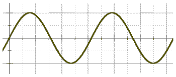

Timbre é a característica peculiar de cada som. Apesar de aprendermos no colégio que o som é uma onda, essa onda não é bonitinha (senoidal) como aparece nos livros:
Cada onda sonora apresenta um formato característico, que depende do material que produziu o som. Isso é o que define o timbre do som. Timbre é o que diferencia dois sons de mesma frequência (mesma nota). Por exemplo, a nota Dó tocada no violão tem um som muito diferente da nota Dó tocada no teclado ou no violino. Isso significa que esses instrumentos possuem timbres diferentes.
Quanto mais prática e experiência um músico desenvolver, mais apurado ficará o seu ouvido para conseguir distinguir o timbre peculiar de cada instrumento. Por exemplo, dois violões de mesmo modelo e mesmo fabricante podem possuir timbres diferentes. Isso ocorre pelo fato da fabricação não ser exatamente igual para todos os instrumentos em uma linha de montagem. Qualquer milímetro de diferença no posicionamento ou encaixe de uma peça já altera o timbre de um instrumento acústico e, muitas vezes, esses detalhes passam despercebidos pela maioria dos músicos.